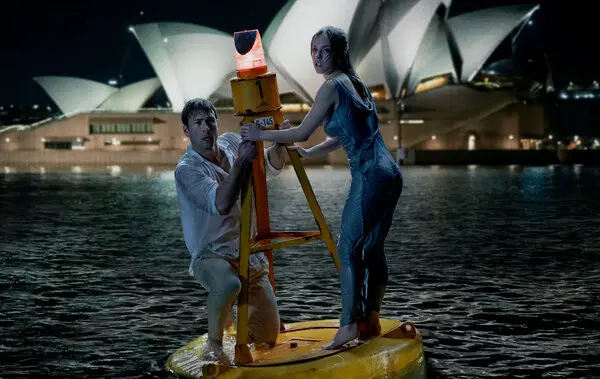

Fun Facts
Shakespearean Inspiration: The film is loosely based on William Shakespeare's classic comedy Much Ado About Nothing. Sharp-tongued dialogue, witty banter, and a focus on mistaken identities are all reminiscent of Shakespeare's play. |
Spider-Bite Surprise: During filming in Australia, actress Sydney Sweeney (who plays Bea) was bitten by a spider. The incident was caught on camera and even made it online. Thankfully, it wasn't serious and just added to the lighthearted chaos on set. |
Hidden Tributes: The names of the main characters, Beatrice (Bea) and Ben, are subtle nods to the leads in Much Ado About Nothing - Beatrice and Benedick. Additionally, the bakery where Bea and Ben get their wedding cake is named Dogberry's, a reference to a character from the Shakespearean play. |
Box Office Bonanza: Anyone But You was a surprise hit at the box office, becoming the first romantic comedy to break the $200 million mark since 2018. |
Fun Moments
